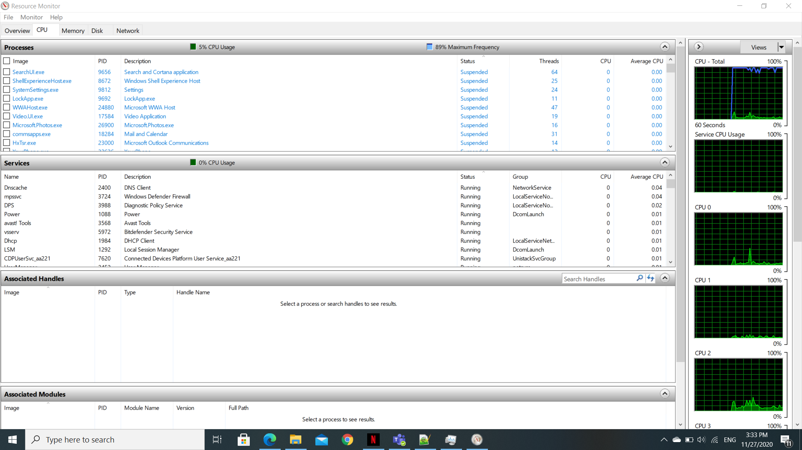

Bontya Thomas Valentin
Bontya.Io.Thomas@utcluj.didatec.ro
Structura retelei personale si accesul la internet

Caracteristicile conexiunii la retea
* Adresa MAC

* Adresa Ip
* Download

* Upload
CPU
Memory

Disk
Network
Ports
Specificatii tehnice ale statiei principale de lucru
| Denumire componenta | Parametri | Producator |
| CPU | AMD Ryzen7 3750H frecventa(GHz) 2.3-4(max) | AMD |
| Memoria(RAM) | 8GB de tip DDR4 SO-DIMM si frecventa de 2666 MHz | |
| Sistem de operare | Windows 10 PRO | Microsoft |
| Placa video | GeForce GTX 1650 4GB | NVIDIA |
| Sursa | intrare sinusoidală de la 50 Hz – 60 Hz valorile nominale pentru adaptorul pentru alimentare de la c.a.: 100 V la 240 V c.a. ieșire: 20 V c.c | fabricat in china |